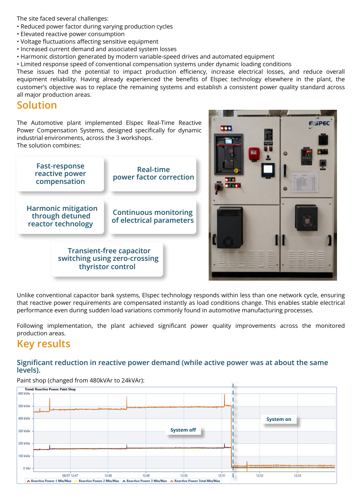
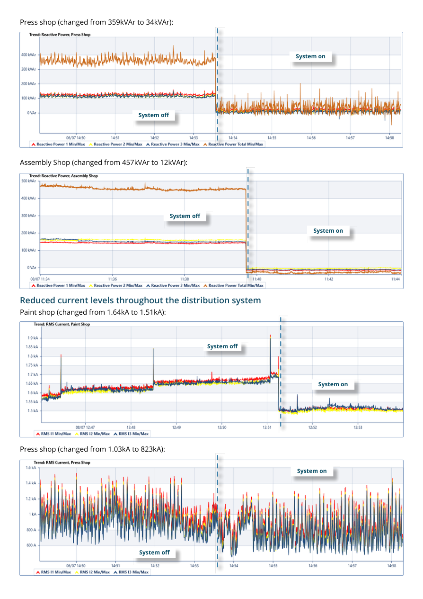
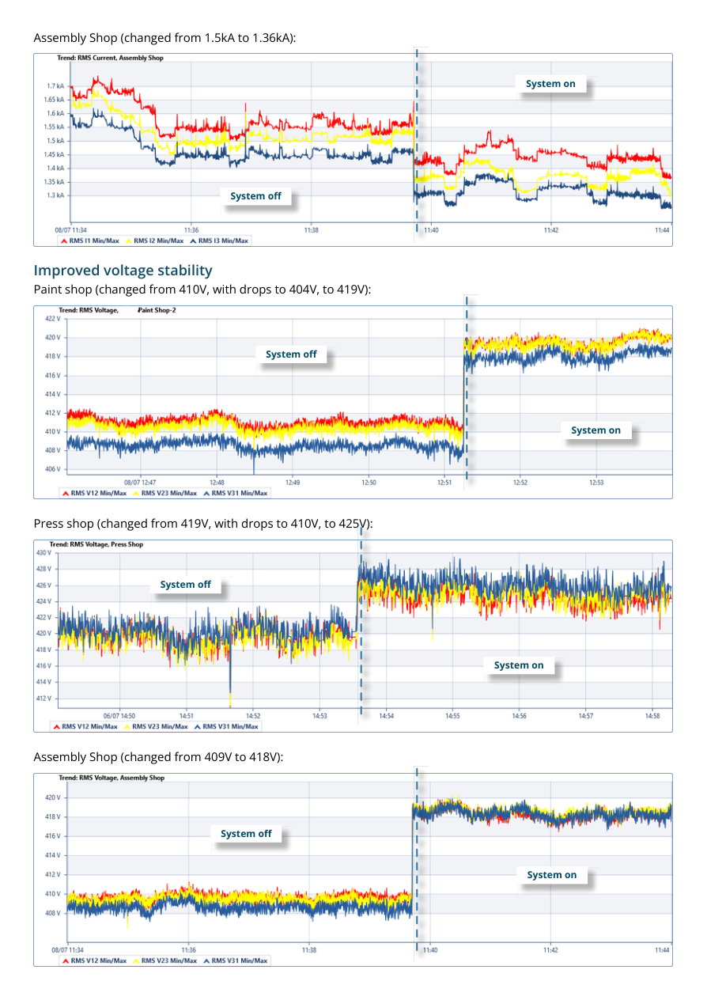
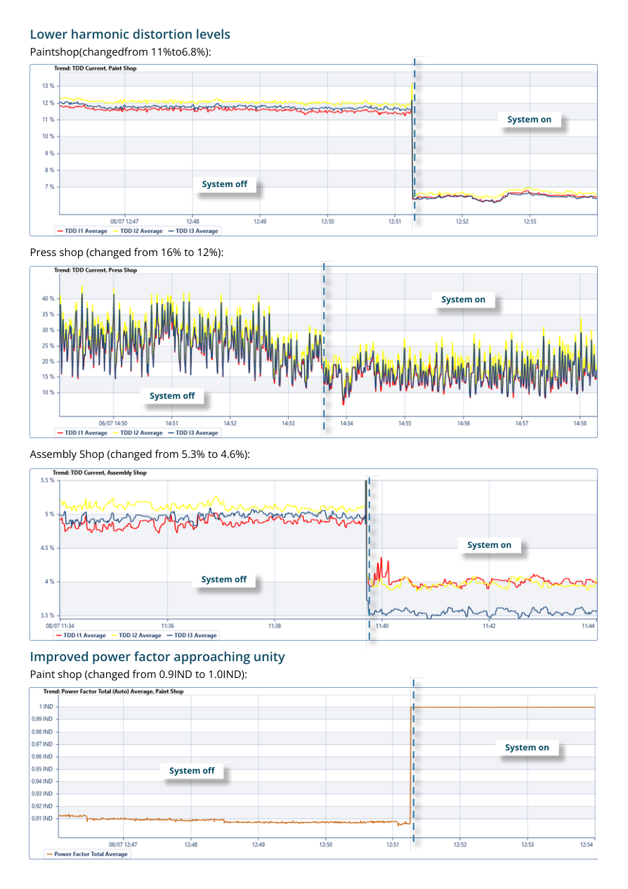
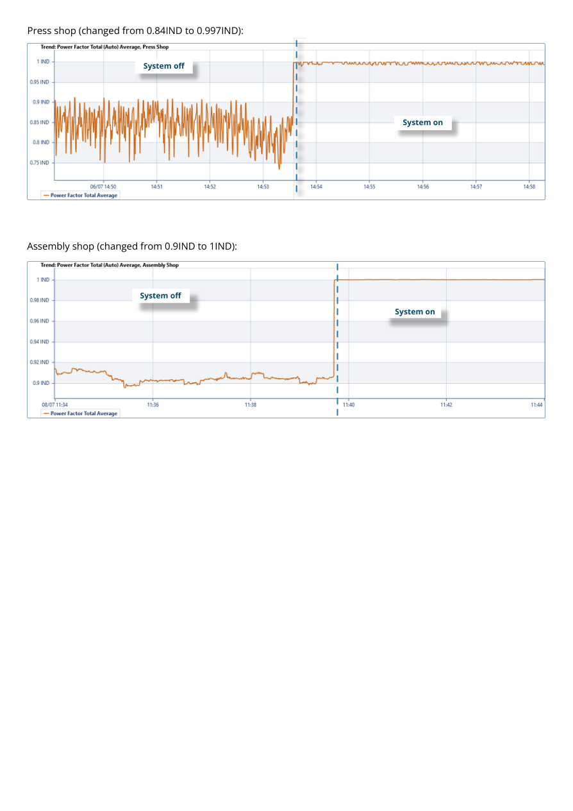
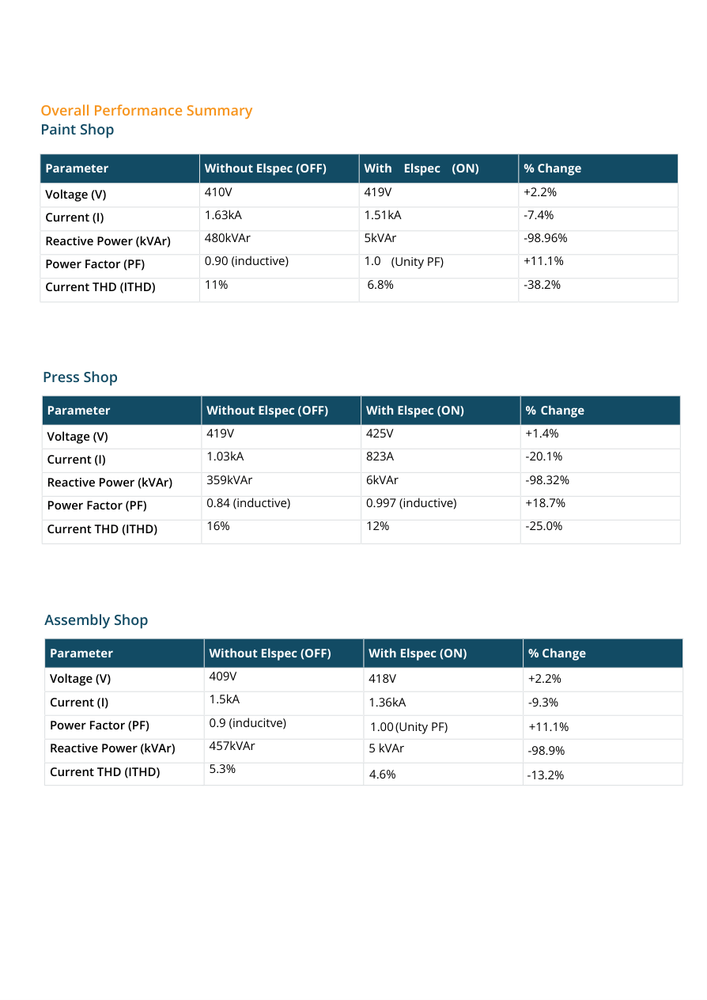
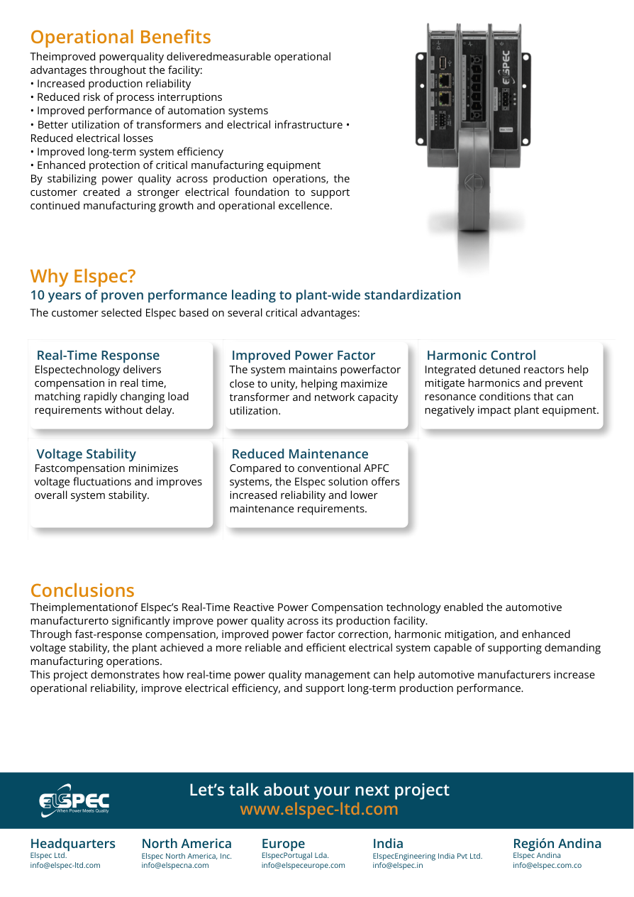

Complete Power Quality Improvement in the Automotive Manufacturing Industry
How real-time reactive power compensation helped standardize power quality across paint, assembly and press shops at a leading automotive manufacturer in India.
Dynamic production loads needed a faster response
Several production areas had already operated successfully with Elspec technology for more than a decade. The paint, assembly and press shops still relied on conventional APFC capacitor banks, which could not respond quickly enough to changing production loads and rising reactive power demand.
The result was lower power factor, voltage fluctuations, higher current and electrical losses, harmonic distortion, and increased risk to sensitive automation equipment.
of proven Elspec performance led to plant-wide standardization.
< 1 cyclereal-time response matched rapidly changing load requirements.
Automotive power quality improvement
Review the complete case study, including the installation context, solution, graphs and measured results.







